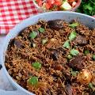

Home
Pilau Recipe

Description
Pilau is a fragrant, one-pot spiced rice dish famous across East Africa and
the broader Swahili Coast. It gets its signature brown color and deep flavor from
caramelized onions and a rich blend of warm spices, typically including cumin,
cinnamon, cardamom, cloves, and black pepper
Ingredients
- 1 tbsp cumin seeds
- 1 tbsp coriander seeds
- 1 tsp black peppercorns
- 1 tsp cloves
- Optional: 3 medium-sized potatoes, quartered
- 12 cardamom pods
- 1 cinnamon stick
- 2 cups Basmati rice (washed and soaked for 15-20 minutes)500g (1 lb)
- beef , cubed
- 4 cups water (or beef broth)
- 3 large red onions, finely sliced
- 2 tbsp garlic, minced
- 1 tbsp fresh ginger, minced
- 1/4 cup cooking oil
- Salt to taste
Procedure
-
Toast the whole spices (cumin, coriander, peppercorns, cloves, cardamom,
and cinnamon) in a dry pan over low heat for 1–2 minutes until highly fragrant.
Grind them into a fine powder to make fresh pilau masala.
-
In a large, heavy-bottomed pot, boil your beef cubes with a little water and salt
until the water completely evaporates.Add the cooking oil to the pot. Fry the beef
until it starts to turn a deep, dark brown.
-
Add the sliced red onions to the meat and oil. Sauté over medium heat until the
onions become a deep, golden brown (this step is the secret to pilau's rich, brown
color). Stir in the minced garlic, ginger, and your freshly ground pilau masala,
and let them cook together for about 1 minute. (Add the optional potatoes here if
using).
-
Add the soaked and drained Basmati rice to the pot. Toss the rice continuously for
about 1 minute to coat every grain in the spiced mixture
-
Pour in the 4 cups of water (or beef broth) and season well with salt. Bring the pot
to a rapid boil, then immediately lower the heat to a gentle simmer. Cover the pot
tightly and let it steam on the lowest heat setting for 15–20 minutes, or until all
the liquid is completely absorbed.
-
Turn off the heat and let the pilau rest (covered) for 5-10 minutes to allow the
aromas to settle. Fluff the rice gently with a fork and serve hot